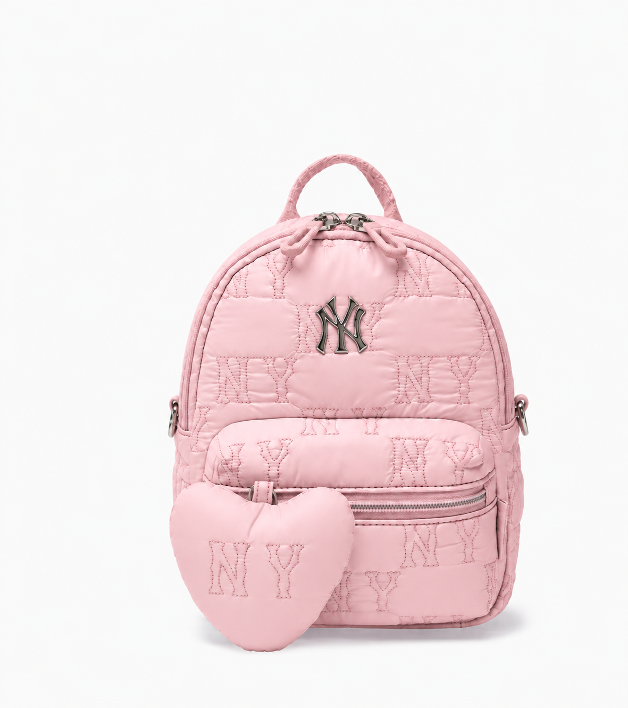
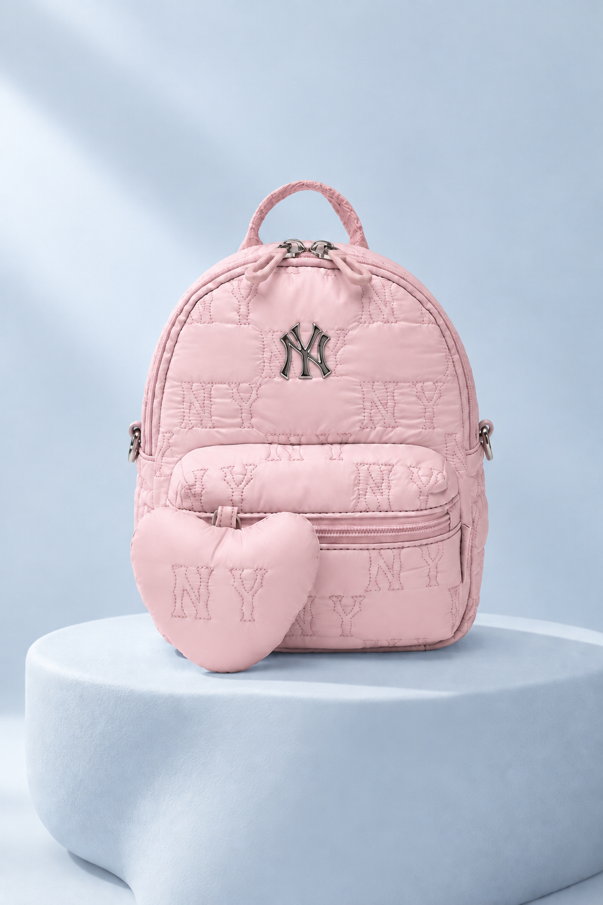
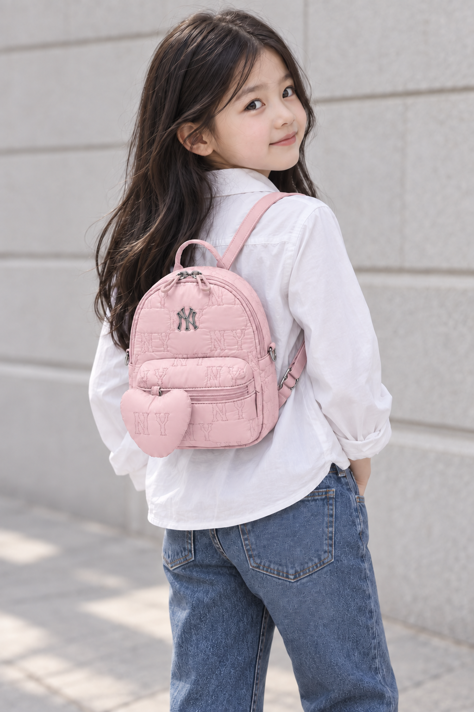
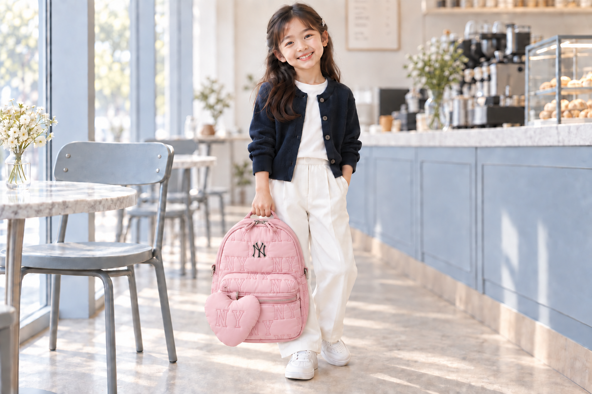

NY 모노그램 퀼팅
반복되는 NY 패턴과 전면 로고.
같은 핑크 톤 안에 디테일을 담았어요.
THE LITTLE PINK EDIT
모노그램 퀼팅 미니 백팩
은은한 핑크에 NY 패턴과 하트 디테일을 더했어요.
AI 컬러 시안블루 원본을 분홍색으로 바꾼 이미지입니다. 실제 판매 색상으로 확인된 제품은 아닙니다.

BLUSH PINK위 이미지는 블루 제품 사진을 AI로 분홍색으로 바꾼 시안입니다.
차분한 색감, 둥근 실루엣.
매일의 스타일에 작은 포인트를 더해 보세요.

반복되는 NY 패턴과 전면 로고.
같은 핑크 톤 안에 디테일을 담았어요.
가방과 어우러지는 하트 장식.
작은 실루엣에 사랑스러움을 더했어요.
디테일 이미지는 AI 핑크 시안을 확대했습니다. 실제 판매 제품 사진이 아닙니다.
상단 손잡이부터 전면 지퍼 포켓까지,
블루 원본을 바탕으로 핑크 컬러를 표현했어요.
화이트와 데님, 차분한 네이비까지.
핑크 미니 백팩과 어울리는 스타일을 만나보세요.


아래 치수는 블루 참고 제품의 정보입니다.
AI 컬러 시안 · 블루 제품 치수 참고
SIZE F
블루 원본의 사이즈표 수치입니다. 원본에 단위가 기재되어 있지 않아 판매 전 확인이 필요합니다.
핑크 제품의 실측 정보가 아닙니다. 실제 구매 제품의 치수와 착용 크기는 판매처에서 확인해 주세요.
참고 정보 안내아래 상품명·품번·소재·치수는 블루 원본 제품의 정보입니다. 핑크 시안의 판매 여부·품번·사양은 확인되지 않았습니다.
이 페이지의 모든 가방 이미지는 블루 제품을 바탕으로 생성한 분홍색 시안입니다. 실제 핑크 상품이 존재하거나 판매된다는 뜻이 아닙니다. 모델·로고·비율·부자재 표현과 착용 핏은 실제와 다를 수 있습니다.
화면 환경과 조명에 따라 색상이 다르게 보일 수 있습니다.
블루 참고 제품의 상품명·구분·소재 출처: 블루 참고 제품의 MLB 공식 정보
판매 가격·배송·교환 및 반품 조건은 판매처의 안내를 확인해 주세요.